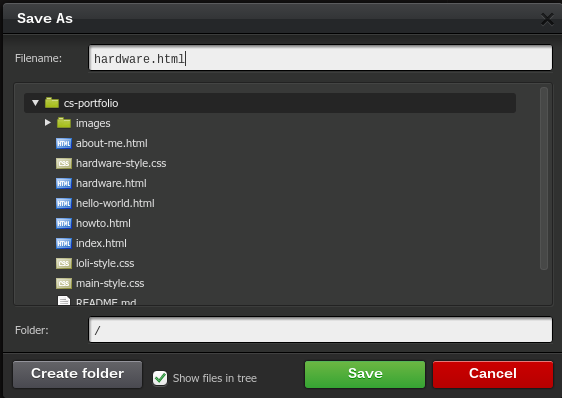
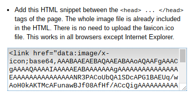
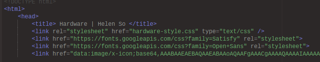
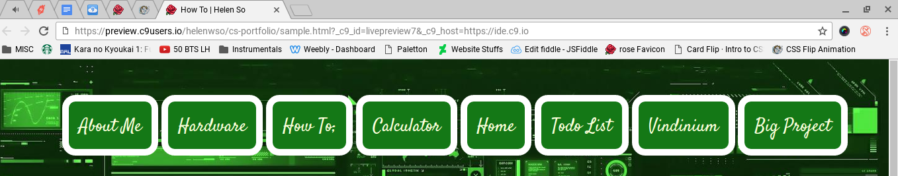
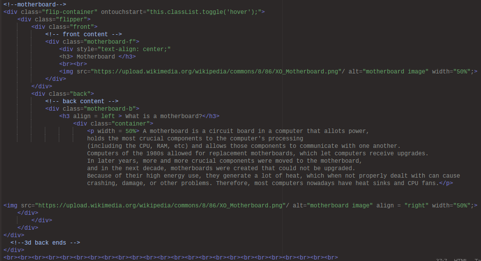
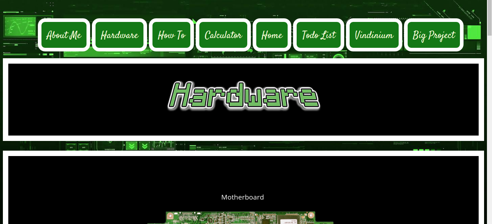
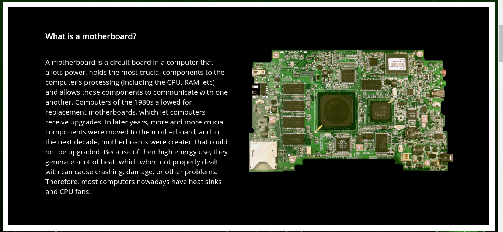

Hello! Below you'll find a step-by-step illustration of the process I went through to make my Hardware Page.
Assuming that we have already gathered all the text and images we need,
we will be starting off this tutorial with the actual making of the page.

First, start off by creating an html file based off a template.
File > New From Template > HTML file

Press ctrl+s, as it will give your file a name. I titled this page "hardware.html".
You could technically have a folder for it, but I like to keep my images and site files separate.
Click save.

The page is now created! Except... there's nothing on it yet. When I create a new page,
the first thing I usually do is create a title for the tab, which would go in the
<title> </title> tags.
Next, I add a personal touch- a favicon. This isn't necessary, but it does spruce up the site a bit and make it easier
to identify when you have a lot of tabs open. For the favicon, I simply found one I thought was pretty on www.favicon.cc,
and took the link that was already in the site:

to copy and paste to my
<head> </head>
The title and favicon combine into a tab that looks like this. Pretty cool right?
Now, we'll be moving into actually putting content on the page. I have my navbar ready to copy and paste from the other parts of the site,
but I still want to customize it so that the colors match with the background, which we don't have yet. I got a cool green tech background online,
and decided to create a new css page so that the hardware page could have its own technology centered theme.
File > New from Template > CSS file
I then set a background for the page that wouldn't scroll down with my text.
body {
background-image: url("http://www.wallpapersxl.com/wallpapers/1440x900/
technology/183804/technology-green-tech-wall-free-183804.jpg");
/* Minimum height */
min-height: 1450px;
/* fixed attachment*/
background-attachment: fixed;
/* center */
background-position: top;
/* scale to cover page */
background-size: cover;
}
But this background doesn't yet apply to the Hardware page, so we have to link it to the top.
In addition, I wanted the addition of some cool fonts for my navbar,
so I linked those into the
<head> </head>
tags as well.

At this point, I copy and pasted the navbar I had from the About Me page,
and added the CSS code too.
<!-- Navbar Starts Here -->
<br>
<ul id="navbar">
<li> <a href= "about-me.html"> About Me </a></li>
<li> <a href= "hardware.html"> Hardware </a></li>
<li> <a href= "howto.html"> How To </a></li>
<li> <a href= "#"> Calculator </a></li>
<li> <a href= "index.html"> Home </a></li>
<li> <a href= "#"> Todo List </a></li>
<li> <a href= "#"> Vindinium </a></li>
<li> <a href= "#"> Big Project </a></li>
</ul>
<!-- Navbar Ends Here -->
CSS
#navbar {
text-align: center;
}
#navbar li {
display: inline-block;
padding: 15px;
font-size: 27px;
border: 10px solid #ffffff;
border-radius: 20px;
background-color: #147816;
}
#navbar a {
color: #FAFFDB;
font-family: "Satisfy", cursive;
text-decoration: none;
}
Then, I changed the background color, border, and font color in CSS.

Now, the site looks like this.

I want my text to be easily read, but the background is patterned and dark. So to achieve that effect,
I used white text.
body {
color: white;
font-family: "Open Sans", cursive;
text-decoration: none;
font-size: larger;
}
Now we'll be adding actual content! (hooray)
I wanted a title that would pop, so I went onto
textcraft.net , and made a logo for the page.
Then, I dowloaded the file, uploaded it to c9 and linked it to the top of the site.
File > Upload Local Files
<img style="margin: 0px auto;display:block" src = "images/hardware/hardware.png" alt="hardware title">
To make it show up even more clearly, I gave it a class (titled hardware) and added a black background, white border, and some padding.
.hardware {
vertical-align: bottom;
border:white 15px solid;
background-color:black;
padding:40px 100px 60px 100px;
}
Next, I had two options: to either keep the text plain, or to add animation. At first, I chose to keep it plain,
but because I
like suffering and staying up till 3 am wanted it to be interactive, I added a flipping effect to each section.
I won't go through the process of making the text plain, because I ended up deleting/reformatting a lot of that code anyway.
After a long, grueling, and unsuccessful process of trying to flip the content I had upon hover, I consulted my dear friend
Krysten, who successfully created the flipping animation, on her ways.
She sent me
this site ,
which had a good template that I could start flipping things with.
My content was already in divs, because I wanted to be able to add separate borders on them. (this was a process that took me pretty long as well).
This was my CSS for the motherboard section of the page, after I added borders.
.motherboard {
vertical-align: bottom;
border:white 15px solid;
background-color:black;
padding:40px 100px 60px 100px;
}
I then created classes called "motherboard-f" and "motherboard-b", with f and b standing for front and back, respectively.
This would ensure that I have both something to flip and something to flip to.
At this time, I copy and pasted the code from David Walsh's website.
HTML
<div class="flip-container" ontouchstart="this.classList.toggle('hover');">
<div class="flipper">
<div class="front">
<!-- front content -->
</div>
<div class="back">
<!-- back content -->
</div>
</div>
</div>
CSS
/* entire container, keeps perspective */
.flip-container {
perspective: 1000px;
}
/* flip the pane when hovered */
.flip-container:hover .flipper, .flip-container.hover .flipper {
transform: rotateY(180deg);
}
.flip-container, .front, .back {
width: 320px;
height: 480px;
}
/* flip speed goes here */
.flipper {
transition: 0.6s;
transform-style: preserve-3d;
position: relative;
}
/* hide back of pane during swap */
.front, .back {
backface-visibility: hidden;
position: absolute;
top: 0;
left: 0;
}
/* front pane, placed above back */
.front {
z-index: 2;
/* for firefox 31 */
transform: rotateY(0deg);
}
/* back, initially hidden pane */
.back {
transform: rotateY(180deg);
}
After this it was fairly straightforward.
I wanted a title and picture of the component centered on the front side of the flip, and on the back, I wanted the title, text, and picture.
So in HTML, this was my code.

Everything was stacked on top of the section before though, so I added a long line of line breaks.
During the process of adding this code, the images and text weren't yet inline, so I had to consult Mr. Hesby,
at which point he added containers to the top of my html page so that everything would line up in the right places.
<style>
.container > *{
display:inline-block;
}
</style>
Then, the hard part was over.
I copy and pasted the motherboard code and replaced the necessary parts with the necessary text/images over and over for the other sections.
Same went for the CSS, where every section had a section div, front and back classes, and padding that had to be adjusted individually.
So, I had sections of the page that flipped. I had a cool wallpaper, and a favicon and site title.
I think something that really brings a site to life though, is a cursor. So I went onto
cursor.cc
and got a cute ghost cursor, which popped on the black background of the page. There was already html code ready to copy and paste,
so to spare my image files from being too hard to read, I just used it instead of downloading the cursor.
And that's it! That's how I made my hardware page ☺

